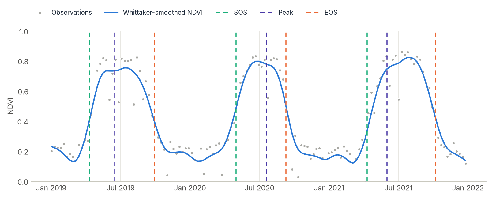
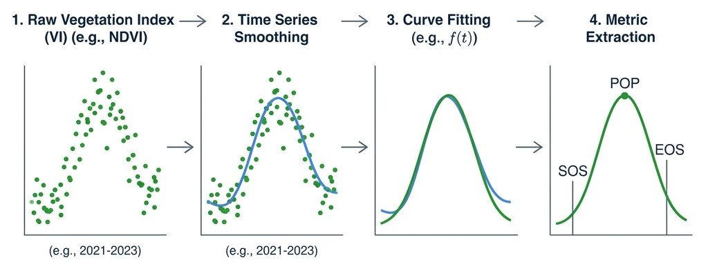

Phenology¶
Extract the calendar of the growing season for every pixel and every year: when green-up starts, when it peaks, when it ends, and how long it lasts. Use it to map crop calendars, detect late planting or drought, find double cropping, or follow climate-driven shifts in vegetation.
phenofit (Kong et al., 2022)
How it works¶
Raw index series are noisy and gappy, so metrics are not read from the raw points. The pipeline runs four steps per pixel:

- Smooth the series with a Whittaker smoother (or HANTS harmonics) to fill gaps and damp noise.
whittaker_lambdasets the stiffness. - Split it into seasons, one per trough-to-trough cycle. Double and triple cropping produce several seasons per year.
- Fit a smooth parametric curve to each season with Levenberg-Marquardt least squares. The curve is re-weighted iteratively so that low outliers (clouds) pull it less.
- Extract the transition dates from the fitted curve with several methods at once.
Available curves (curve=):
| Curve | Notes |
|---|---|
"beck" |
Double logistic of Beck et al. (2006). The default, and a good general choice. |
"elmore" |
Double logistic with a summer green-down term (Elmore et al., 2012). |
"gu" |
Gu et al. (2009), flexible asymmetric shape. |
"klos" |
Klosterman et al. (2014). |
"zhang" |
Piecewise logistic (Zhang et al., 2003). |
"ag" |
Asymmetric Gaussian. |
"dl" |
Plain double logistic. |
The 19 metrics¶
Every method below is computed from the same fitted curve, at no extra cost, whatever method= says. All dates are days of the year (with annual=False, days counted from January 1st of the first year).
| Family | Metrics | Definition |
|---|---|---|
| Threshold | TRS2.sos, TRS2.eos |
Curve crosses 20% of the seasonal amplitude (rising, falling). |
TRS5.sos, TRS5.eos |
Crosses 50%. A robust default for start and end of season. | |
TRS6.sos, TRS6.eos |
Crosses 60%. | |
| Derivative | DER.sos, DER.eos |
Fastest green-up and fastest senescence (extremes of the first derivative). |
DER.pos |
Peak of the season (first derivative is zero). | |
| Gu | UD, SD, DD, RD |
Upturn, stabilisation, downturn and recession dates, from the second derivative. |
| Zhang | Greenup, Maturity, Senescence, Dormancy |
Extremes of the rate of change of curvature. |
| General | LOS |
Length of season in days. |
POP |
Position of the peak. |
Two quality metrics, R2 and RMSE of the fitted curve, follow the 19 phenology metrics, so the output xarray.Dataset has 21 variables.
Processing a raster¶
zeit.phenology takes the cube as it is: a raster on disk, a (time, y, x) cube in memory or on Dask, a numpy array with dates=, or a single pixel's series. It computes the day numbering and the years from the dates, and by default (annual=True) maps each season to its calendar year, with dates as days of the year.
import zeit
# 1. The dense time series as a (time, y, x) cube; the dates come from the band
# descriptions (pass dates= for a stack without them)
evi = zeit.load_raster("MODIS_EVI_Series.tif")
# 2. Smooth, fit and extract the metrics, every pixel in parallel (C++ / OpenMP)
pheno = zeit.phenology(
evi,
curve="beck", # Beck's double logistic
whittaker_lambda=10.0, # Whittaker smoothness parameter
apply_whittaker=True, # apply Whittaker before fitting
min_season_length=7, # a season must last at least 7 days
min_amplitude=0.0,
min_pixel_amplitude=0.1, # skip dead/water pixels entirely
n_jobs=14, # 14 CPU threads
)
# An xarray.Dataset of 21 variables (19 metrics + R2 + RMSE), each (year, y, x)
sos = pheno["TRS5.sos"].sel(year=2010) # day of year; names with dots need brackets
# 3. One georeferenced GeoTIFF per metric, one band per year (2001, 2002, ...)
zeit.save_raster(pheno, "pheno_out")
For a raster larger than memory, pass chunks="auto": the result is lazy and is computed block by block while save_raster writes it. The accessor form, evi.zeit.phenology(curve="beck", ...), is the same function.
Worked example: late planting in soybean fields¶
This section walks through a complete, realistic problem end-to-end: an analyst wants to know whether soybean fields in a Mato Grosso municipality (Brazil) show anomalously delayed green-up in a candidate drought year, compared to a multi-year baseline — a common early-warning question for agricultural monitoring and drought impact assessment. Late green-up (a positive SOS anomaly, in days) is a classic remote signal of delayed planting caused by late onset of the rainy season.
The workflow chains three zeit building blocks: build_time_series (STAC ingestion) → regularize_time_series (temporal regularization) → zeit.phenology (metric extraction), all lazy until .compute() is called — so it scales from a single tile to a whole state without changing the code.
Step 1 — Build a multi-year Sentinel-2 cube for the area of interest¶
import matplotlib.pyplot as plt
import zeit
from zeit import regularize_time_series
# Multi-year window covering the baseline + the candidate drought year (2021)
cube_raw = zeit.build_time_series(
source="earth_search",
collection="sentinel-2-l2a",
tiles=["21LWH"], # A Sentinel-2 MGRS tile over Mato Grosso cropland
start_date="2019-07-01",
end_date="2022-06-30", # 3 full crop years: 2019/20, 2020/21, 2021/22
bands=["red", "nir"],
apply_cloud_mask=True, # Drops clouds/shadows using the SCL band automatically
)
Step 2 — Compute NDVI and regularize to 16-day composites¶
Phenology curve-fitting expects a reasonably dense, evenly-spaced time axis — raw STAC revisits are irregular (5–12 days, with cloud gaps). We compute NDVI first (single-band, so method="median" is the right choice — medoid needs a band dimension to compare against) and then regularize:
ndvi_raw = (cube_raw.sel(band="nir") - cube_raw.sel(band="red")) / (
cube_raw.sel(band="nir") + cube_raw.sel(band="red")
)
ndvi_16d = regularize_time_series(ndvi_raw, freq="16D", method="median")
Step 3 — Run the phenology engine across all three crop years at once¶
# The day numbering and the years (2019 ... 2022) come from the cube's dates.
pheno = zeit.phenology(
ndvi_16d,
curve="beck",
apply_whittaker=True,
whittaker_lambda=5.0, # a bit looser than default: S2 NDVI is noisier than MODIS
min_season_length=45, # ignore green-ups shorter than ~45 days (noise, not a crop cycle)
min_amplitude=0.15,
min_pixel_amplitude=0.15, # skip forest/water/urban pixels entirely — huge speedup at scale
n_jobs=-1, # annual=True (default): one value per calendar year
).compute()
Step 4 — Compute the SOS anomaly for the candidate drought year¶
We use DER.sos (derivative-based Start of Season — see the 19 metrics) and compare the target year against the mean of the other years in the window:
sos = pheno["DER.sos"] # dims: (year, y, x), values in day-of-year
target_year = 2021
baseline_years = [y for y in sos.year.values if y != target_year]
baseline_mean_sos = sos.sel(year=baseline_years).mean(dim="year", skipna=True)
target_sos = sos.sel(year=target_year)
# Positive = later green-up than the baseline (a delayed-planting / drought signal)
sos_anomaly_days = target_sos - baseline_mean_sos
Step 5 — Visualize and export¶
fig, ax = plt.subplots(figsize=(8, 6))
sos_anomaly_days.plot(
ax=ax, cmap="RdBu_r", vmin=-30, vmax=30,
cbar_kwargs={"label": "SOS anomaly (days, + = later green-up)"},
)
ax.set_title(f"Planting Delay Anomaly — {target_year} vs. {baseline_years} baseline")
plt.savefig("sos_anomaly_2021.png", dpi=150, bbox_inches="tight")
# Export as a GeoTIFF for use in QGIS or further zonal statistics (georeferenced from the cube)
zeit.save_raster(sos_anomaly_days, f"sos_anomaly_{target_year}.tif")
Interpreting the result¶
- Anomaly > +15 days: green-up notably delayed relative to the baseline — worth cross-checking against rainfall onset records for that season; a classic drought/late-planting signal.
- Anomaly < -15 days: notably earlier green-up — can indicate irrigation, an earlier-maturing cultivar, or a shift toward double-cropping.
NaNpixels: no season passed themin_amplitude/min_season_lengthfilters in at least one of the years being compared (e.g., fallow land, pasture, or a rotation year) —xarray's alignment propagates this automatically, no special handling needed.- This is a remote-sensing signal, not ground truth — always validate against field records or known planting calendars before drawing operational conclusions.
Because every step here (build_time_series, regularize_time_series, phenology) is Dask-backed, the exact same code scales from one MGRS tile to an entire state or country simply by widening bbox/tiles — only the chunk count (and wall-clock time) changes.
Advanced configuration¶
Double and triple cropping¶
In regions with intense agricultural activity (like Mato Grosso, Brazil), a single pixel might feature two or even three distinct crop harvests within a single year (e.g., Soybeans followed by Corn).
To capture these dynamics, ask for one value per detected season instead of one per calendar year, with annual=False and max_seasons:
(season, y, x), with season = 1, 2, 3: map season=1 as the first harvest, season=2 as the second (safrinha), and so on. Dates are then counted in days from January 1st of the first year (seasons.attrs["base_year"]), since a season can cross the turn of the year.
Quality-control parameters¶
whittaker_lambda: Higher values create stiffer, smoother curves. Lower values allow the curve to bend sharply to follow the raw data closely. For 16-day composites, values between1.0and5.0are standard.min_season_length: Useful for filtering out high-frequency noise spikes that mistakenly look like a very short 2-day growing season. Measured in days, not in observation count — it is compared against the actual elapsed time between a season's start and end, so it behaves consistently regardless of the sensor's revisit cadence.min_amplitude: Prevents the optimizer from fitting curves on background noise (e.g., bare soil that fluctuates slightly with rain). If the peak of the smoothed curve minus the base is less than this value, the season is rejected.
Down-weighting low-quality observations¶
Cloud, cloud-shadow, and snow contamination can distort the smoothed curve even after masking obvious no-data pixels. zeit.qc decodes a sensor's native QA/QC band into per-observation reliability weights in [0, 1], which then feed both the Whittaker/HANTS smoother and the iterative curve-fit reweighting (wTSM) — low-quality observations pull the fit less instead of being treated as equally trustworthy as clear ones:
from zeit.qc import qc_modis_summary, qc_modis_state, qc_sentinel2_scl
# MOD13A1/A2/Q1 "SummaryQA" band (0=good, 1=marginal, 2=snow/ice, 3=cloudy)
weights = qc_modis_summary(qa_cube) # -> [1.0, 0.5, 0.2, 0.2], aligned with qa_cube
pheno_results = zeit.phenology(
evi,
curve="beck",
weights=weights, # (time, y, x), aligned with the input cube
season_retry=True, # default: relax the trough threshold once if a
# pixel's first pass finds no season at all
)
qc_modis_state (MOD09 500m 16-bit "State QA": cloud state, cloud shadow, aerosol quantity, snow/ice) and qc_sentinel2_scl (Sentinel-2 L2A Scene Classification Layer) follow the same [0, 1] convention for their respective sensors. All three are ports of phenofit's qcFUN.R (see References).
Performance¶
The whole pipeline runs in C++ (Eigen and OpenMP) outside the Python GIL, with buffers allocated once per thread. On a real 25-year EVI raster it was 244 times faster than R phenofit on one core, with a mean start-of-season difference of 3.7 days. See Benchmarks.
On macOS, the pre-built wheels run single-threaded. See Installation to enable OpenMP.
References¶
The methodology of this module — the smoothing methods, the iterative curve-fitting scheme, and the simultaneous multi-method metric extraction — is based on the R package phenofit:
- Kong, D., McVicar, T. R., Xiao, M., Zhang, Y., Peña-Arancibia, J. L., Filippa, G., Xie, Y., & Gu, X. (2022). phenofit: An R package for extracting vegetation phenology from time series remote sensing. Methods in Ecology and Evolution, 13(7), 1508–1527. https://doi.org/10.1111/2041-210X.13870
The individual curve-fitting models and extraction methods available via curve and method originate from:
- Beck, P. S. A., Atzberger, C., Høgda, K. A., Johansen, B., & Skidmore, A. K. (2006). Improved monitoring of vegetation dynamics at very high latitudes: A new method using MODIS NDVI. Remote Sensing of Environment, 100(3), 321–334. https://doi.org/10.1016/j.rse.2005.10.021
- Zhang, X., Friedl, M. A., Schaaf, C. B., Strahler, A. H., Hodges, J. C. F., Gao, F., Reed, B. C., & Huete, A. (2003). Monitoring vegetation phenology using MODIS. Remote Sensing of Environment, 84(3), 471–475. https://doi.org/10.1016/S0034-4257(02)00135-9
- Gu, L., Post, W. M., Baldocchi, D. D., Black, T. A., Suyker, A. E., Verma, S. B., Vesala, T., & Wofsy, S. C. (2009). Characterizing the seasonal dynamics of plant community photosynthesis across a range of vegetation types. In A. Noormets (Ed.), Phenology of Ecosystem Processes (pp. 35–58). Springer. https://doi.org/10.1007/978-1-4419-0026-5_2
- Elmore, A. J., Guinn, S. M., Minsley, B. J., & Richardson, A. D. (2012). Landscape controls on the timing of spring, autumn, and growing season length in mid-Atlantic forests. Global Change Biology, 18(2), 656–674. https://doi.org/10.1111/j.1365-2486.2011.02521.x
- Klosterman, S. T., Hufkens, K., Gray, J. M., Melaas, E., Sonnentag, O., Lavine, I., Mitchell, L., Norman, R., Friedl, M. A., & Richardson, A. D. (2014). Evaluating remote sensing of deciduous forest phenology at multiple spatial scales using PhenoCam imagery. Biogeosciences, 11(16), 4305–4320. https://doi.org/10.5194/bg-11-4305-2014